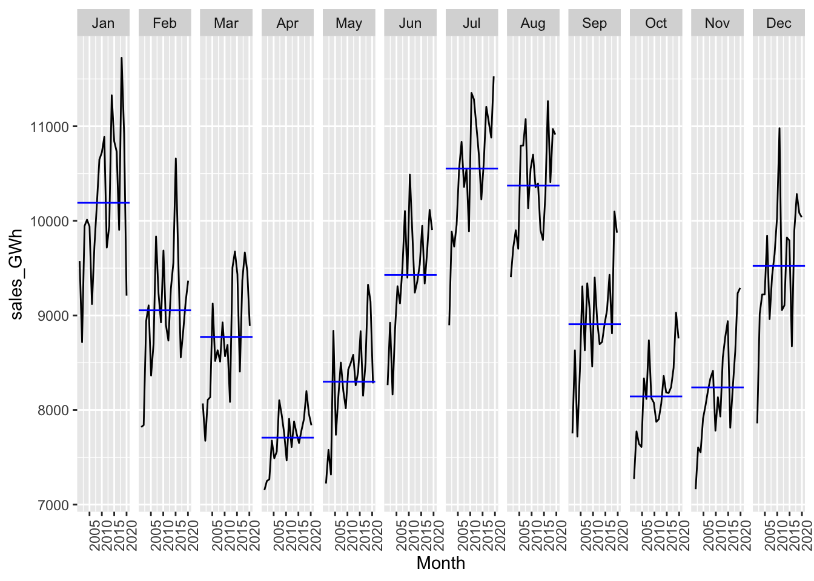
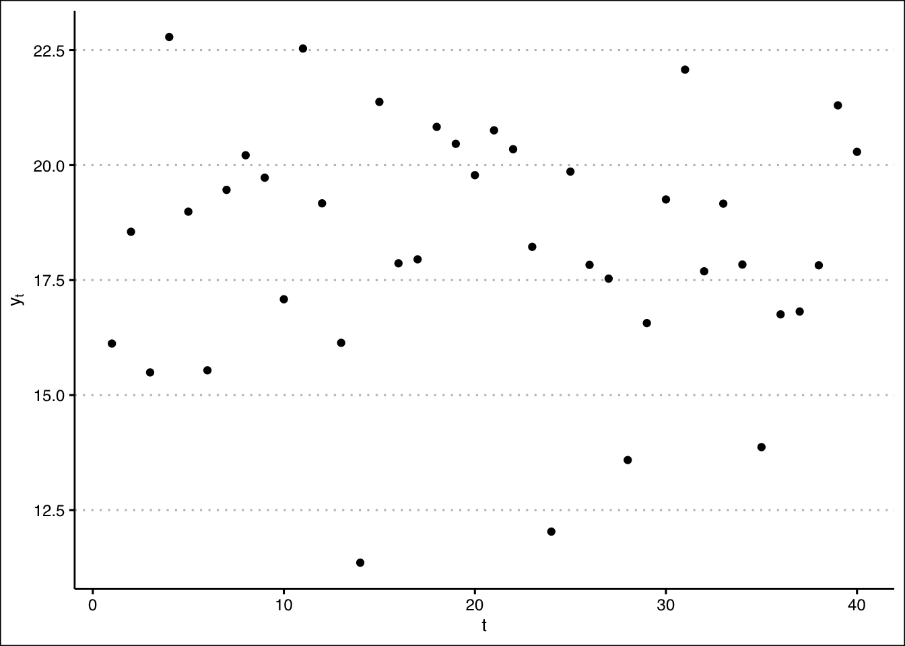

C Assignment: Project Proposal
In this assignment you will develop your initial concept note into a draft of a full project proposal. Treat this assignment as a “dry run” for developing a proposal for a grant or fellowship application, or for your Ph.D. prospectus.
Your proposal should include at least the following sections and information.
Front matter: Descriptive title, your name, date, reference to “SYS 5581 Time Series & Forecasting, Spring 2021”.
Abstract: A very brief summary of the project.
C.1 Introduction
Give a narrative description of the problem you are addressing, and the methods you will use to address it. Provide context:
- What is the question you are attempting to answer?
- Why is this question important? (Who cares?)
- How will you go about attempting to answer this question?
This work addresses the question: Why do people not use probabilistic forecasts for decision-making?
C.2 The data and the data-generating process
Describe the data set you will be analyzing, and where it comes from, how it was generated and collected. Identify the source of the data. Give a narrative description of the data-generating process: this piece is critical.
Since these will be time series data: identify the frequency of the data series (e.g., hourly, monthly), and the period of record.
esales <- dbGetQuery(db,'SELECT * from eia_elec_sales_va_all_m') # SQL code to retrieve data from a table in the remote database
# str(esales)
esales <- as_tibble(esales) # Convert dataframe to a 'tibble' for tidyverse work
# str(esales)C.3 Exploratory data analysis
Provide a brief example of the data, showing how they are structured.
## # A tibble: 233 x 4
## value date year month
## <dbl> <date> <int> <int>
## 1 8282. 2020-05-01 2020 5
## 2 7839. 2020-04-01 2020 4
## 3 8889. 2020-03-01 2020 3
## 4 9368. 2020-02-01 2020 2
## 5 9209. 2020-01-01 2020 1
## 6 10038. 2019-12-01 2019 12
## 7 9291. 2019-11-01 2019 11
## 8 8757. 2019-10-01 2019 10
## 9 9874. 2019-09-01 2019 9
## 10 10912. 2019-08-01 2019 8
## # … with 223 more rows
C.4 Plot the time series.
#Reference: https://ggplot2.tidyverse.org/
ggplot(data=esales, aes(x=date,y=value)) +
geom_line() + xlab("Year") + ylab("Virginia monthly total electricity sales (GWh)")
# install.packages("tsibble")
library(tsibble) # Reference: https://tsibble.tidyverts.org/articles/intro-tsibble.html
esales %>% as_tsibble(index = date) -> esales_tbl_ts
print(esales_tbl_ts)## # A tsibble: 233 x 4 [1D]
## value date year month
## <dbl> <date> <int> <int>
## 1 9576. 2001-01-01 2001 1
## 2 7820. 2001-02-01 2001 2
## 3 8070. 2001-03-01 2001 3
## 4 7153. 2001-04-01 2001 4
## 5 7224. 2001-05-01 2001 5
## 6 8264. 2001-06-01 2001 6
## 7 8896. 2001-07-01 2001 7
## 8 9404. 2001-08-01 2001 8
## 9 7753. 2001-09-01 2001 9
## 10 7272. 2001-10-01 2001 10
## # … with 223 more rowsC.5 Perform and report the results of other exploratory data analysis

# install.packages("feasts"), Reference: https://feasts.tidyverts.org/
library(feasts)
elsales_tbl_ts %>%
mutate(Month = yearmonth(date)) %>%
as_tsibble(index = Month) -> vaelsales_tbl_ts
vaelsales_tbl_ts %>% gg_season(sales_GWh, labels = "both") + ylab("Virginia electricity sales (GWh)")
## # A tsibble: 218 x 7 [1Q]
## Quarter Beer Tobacco Bricks Cement Electricity Gas
## <qtr> <dbl> <dbl> <dbl> <dbl> <dbl> <dbl>
## 1 1956 Q1 284 5225 189 465 3923 5
## 2 1956 Q2 213 5178 204 532 4436 6
## 3 1956 Q3 227 5297 208 561 4806 7
## 4 1956 Q4 308 5681 197 570 4418 6
## 5 1957 Q1 262 5577 187 529 4339 5
## 6 1957 Q2 228 5651 214 604 4811 7
## 7 1957 Q3 236 5317 227 603 5259 7
## 8 1957 Q4 320 6152 222 582 4735 6
## 9 1958 Q1 272 5758 199 554 4608 5
## 10 1958 Q2 233 5641 229 620 5196 7
## # … with 208 more rows





vaelsales_tbl_ts %>%
model(STL(sales_GWh ~ trend(window=21) + season(window='periodic'), robust = TRUE)) %>%
components() %>%
autoplot()
vaelsales_tbl_ts %>%
mutate(ln_sales_GWh = log(sales_GWh)) %>%
model(STL(ln_sales_GWh ~ trend(window=21) + season(window='periodic'),
robust = TRUE)) %>%
components() %>%
autoplot()
## # A tibble: 1 x 9
## trend_strength seasonal_streng… seasonal_peak_y… seasonal_trough… spikiness
## <dbl> <dbl> <dbl> <dbl> <dbl>
## 1 0.597 0.863 7 4 862916.
## # … with 4 more variables: linearity <dbl>, curvature <dbl>, stl_e_acf1 <dbl>,
## # stl_e_acf10 <dbl>## # A tibble: 1 x 48
## trend_strength seasonal_streng… seasonal_peak_y… seasonal_trough… spikiness
## <dbl> <dbl> <dbl> <dbl> <dbl>
## 1 0.597 0.863 7 4 862916.
## # … with 43 more variables: linearity <dbl>, curvature <dbl>, stl_e_acf1 <dbl>,
## # stl_e_acf10 <dbl>, acf1 <dbl>, acf10 <dbl>, diff1_acf1 <dbl>,
## # diff1_acf10 <dbl>, diff2_acf1 <dbl>, diff2_acf10 <dbl>, season_acf1 <dbl>,
## # pacf5 <dbl>, diff1_pacf5 <dbl>, diff2_pacf5 <dbl>, season_pacf <dbl>,
## # zero_run_mean <dbl>, nonzero_squared_cv <dbl>, zero_start_prop <dbl>,
## # zero_end_prop <dbl>, lambda_guerrero <dbl>, kpss_stat <dbl>,
## # kpss_pvalue <dbl>, pp_stat <dbl>, pp_pvalue <dbl>, ndiffs <int>,
## # nsdiffs <int>, bp_stat <dbl>, bp_pvalue <dbl>, lb_stat <dbl>,
## # lb_pvalue <dbl>, var_tiled_var <dbl>, var_tiled_mean <dbl>,
## # shift_level_max <dbl>, shift_level_index <dbl>, shift_var_max <dbl>,
## # shift_var_index <dbl>, shift_kl_max <dbl>, shift_kl_index <dbl>,
## # spectral_entropy <dbl>, n_crossing_points <int>, longest_flat_spot <int>,
## # coef_hurst <dbl>, stat_arch_lm <dbl>